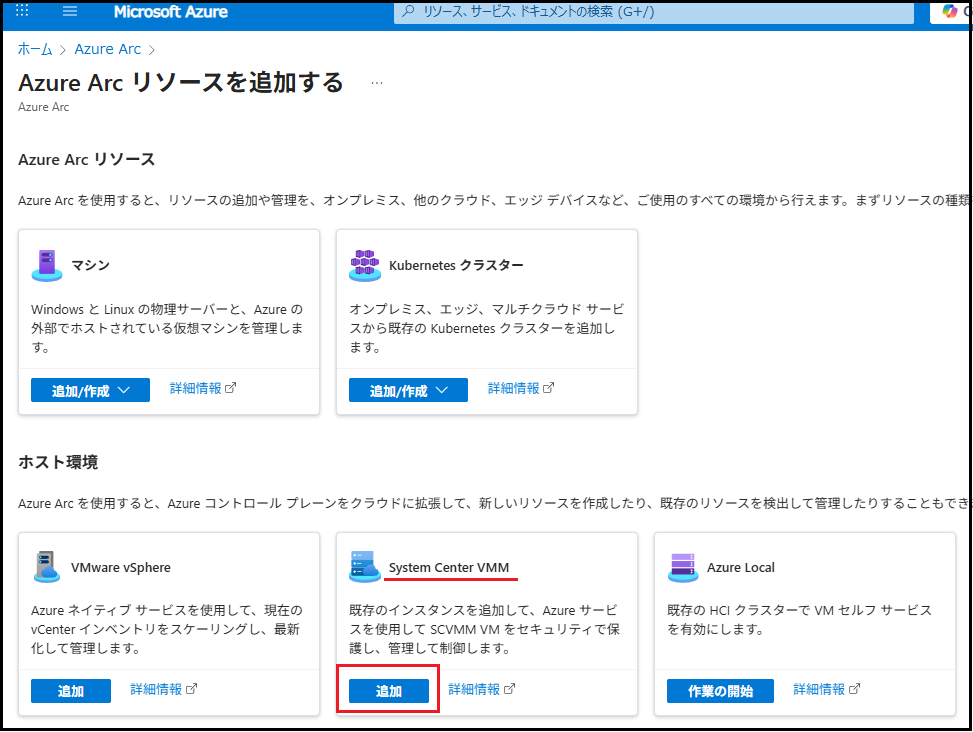
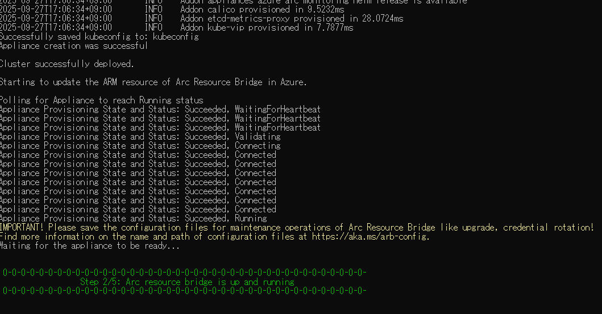
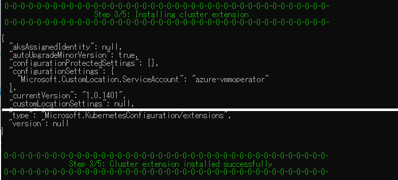
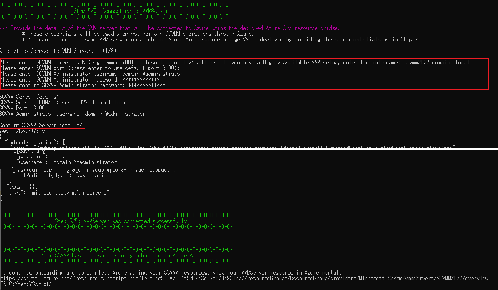
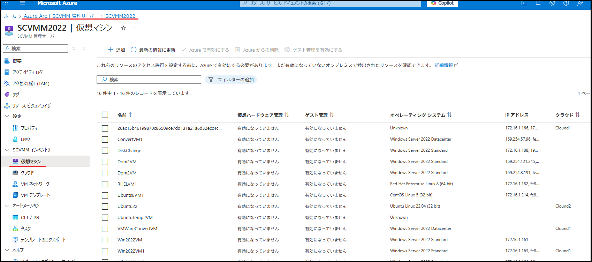
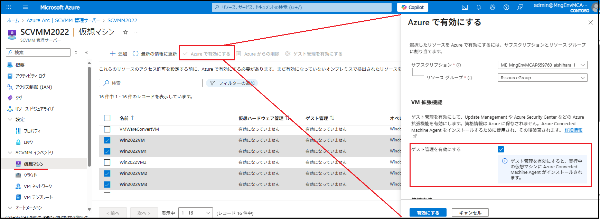
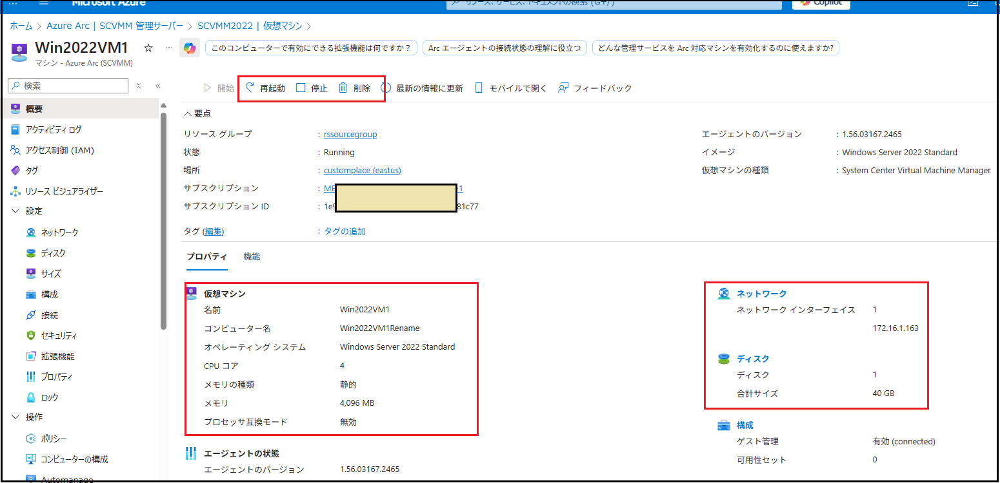
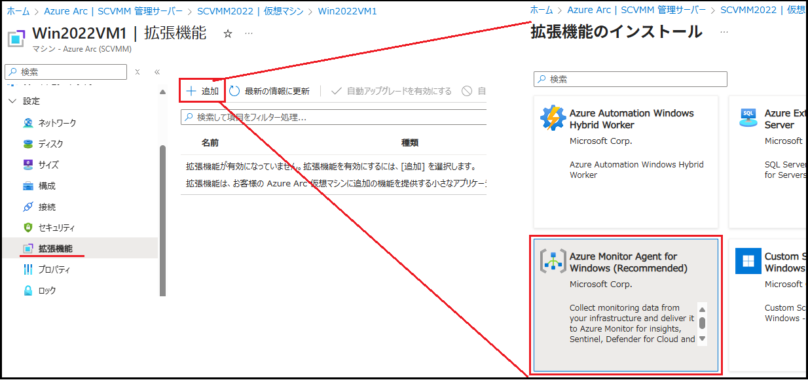
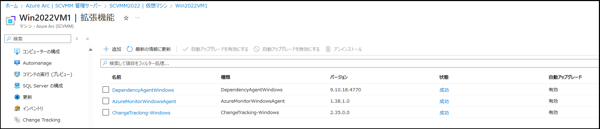

皆様こんにちは、System Center サポートチームの 石原 です。
今回は、SCVMM で管理しているオンプレミスの Hyper-V 環境を、Azure ポータルから操作できるようにする 「Azure Arc SCVMM」 についてご紹介します。
Azure Arc SCVMM とは
Azure Arc SCVMM を利用すると、SCVMM で管理するオンプレミスの Hyper-V 上で稼働する仮想マシンを Azure ポータルから管理できるようになります。具体的には次のような操作が可能です：
- 仮想マシンの起動・停止・削除
- 新規仮想マシンの作成
- 仮想マシンに Azure の拡張機能（例：Azure Monitor エージェント）をインストールし、Azure VM と同じように管理・監視
本記事では以下について説明します。
１．SCVMM を Azure に登録する方法
２．仮想マシンを管理する方法
１．SCVMM を Azure に登録する
SCVMM を Azure に登録する際には、以下のリソースが必要です。
Azure 側
● リソースブリッジ①
● カスタムの場所
SCVMM 側
● リソースブリッジ② (※ Hyper-V 上の仮想アプライアンス)
これらのリソースは、Azure ポータルからダウンロードできるスクリプトを実行することで一度に作成されます。
工程１：登録用スクリプトのダウンロード
登録先の Azure 環境にログインし、Azure Arc 画面を開きます。 [リソースの追加] をクリックします。
[System Center VMM] の [追加] をクリックします。

[リソース ブリッジの新規作成] を選択し、 [次へ：基本] をクリックします。
以下の情報を入力し、 [次へ：タグ] をクリックします。
① リソースブリッジ名
② カスタムの場所名
③ SCVMM 管理サーバー名
必要に応じてタグを設定し、 [次へ：スクリプトのダウンロードと実行] をクリックします。
[スクリプトをダウンロードする] をクリックして、スクリプトのダウンロードが完了したら [閉じる] をクリックします。
工程２：スクリプトの実行
ダウンロードした PowerShell スクリプト resource-bridge-onboarding-script.ps1 を SCVMM 管理サーバー内の任意の場所にコピーします。
※ スクリプトは任意のサーバーで実行可能ですが、接続の問題を避けるため、 Azure ポータルにログイン可能な SCVMM 管理サーバーでの実行を推奨 します。
PowerShell を管理者として起動し、スクリプトを実行します。
① Step 1/5： Setting up thecurrent workstation
初期構成に関する質問に回答します。
また、スクリプトの実行に必要なモジュールが自動的にインストールされるため、完了するまで待機します。
② Step 2/5： Creating the Arc Resource bridge
リソース ブリッジ作成のメイン処理です。
SCVMM サーバー接続情報やリソース ブリッジの設定を入力しながら進めます。
状態が「Connected → Running」になれば作成完了 です。

この時点で Hyper-V 上にリソース ブリッジの仮想アプライアンスが展開され、Azure ポータル上のリソース ブリッジも [Running] と表示されます。
③ Step 3/5： Installing cluster extension
クラスター拡張機能のインストール処理です。
通常は短時間で完了します。

④ Step 4/5： Creating custom location
Azure 上に「カスタムの場所」を作成する処理です。
正常に終了すると、Azure ポータルに新しいカスタムの場所が作成されていることを確認できます。
⑤ Step 5/5： Connectiong to VMMServer
最終ステップです。登録対象となる SCVMM の接続情報を再入力 します。

工程３：登録確認
登録処理が正常に完了したら、Azure ポータルで以下を確認します。
[Azure Arc] > [SCVMM 管理サーバー] を開き、SCVMM 管理サーバーが登録され、状態が Connected になっていることを確認します。

[設定] > [SCVMM インベントリ] を開き、SCVMM 環境のリソースが Azure 上に連携されていることを確認します。
以下は [仮想マシン] 画面の例です。（SCVMM 環境の仮想マシン一覧が表示されます）

注意事項
登録スクリプトの中では多数の処理が動作します。主な処理は次の通りです。
- SCVMM 環境への接続
- ライブラリ サーバーへの仮想ディスクコピー
- Hyper-V 上へのリソース ブリッジ仮想アプライアンス配置
- Azure リソースの作成（リソース ブリッジ、カスタムの場所、SCVMM 管理サーバーなど）
これらの処理には、20～30 分程度かかる場合があります。
実行中に突発的な通信断などが発生すると、スクリプトが失敗することがあります。
その場合は、以下のように -Force オプションを付けて再実行してください。
1 | ./resource-bridge-onboarding-script.ps1 -Force |
-Force を付けることで、失敗時に途中まで作成されたリソースが自動的にクリーンアップされ、再実行が可能になります。
● 参考情報
Azure Arc SCVMM の詳細および登録手順につきましては、以下の公開情報をご参照ください。
● Azure Arc SCVMM について
● Azure Arc SCVMM の登録手順
２．仮想マシンを管理する
仮想マシンの管理
SCVMM が Azure に登録されると、SCVMM で管理している仮想マシンが Azure 上のリソースとして表示されます。
ただし、初期状態では 参照のみ で操作はできません。
操作を有効にするには、Azure ポータルにて [Azure で有効にする] を実行します。
さらに、 [ゲスト管理を有効にする] にチェックを入れると、該当仮想マシンに Azure Connected Agent がインストールされ、Azure Monitor エージェントなどの拡張機能も利用できるようになります。

「Azure で有効にする」と「ゲスト管理を有効にする」を有効にした画面ショットです。
Azure で有効にした仮想マシンは、Azure VM と同じような管理画面が作成されます。
- 状態の確認
- 起動／停止／削除
などの操作が可能です。

また、ゲスト管理を有効にした仮想マシン では Azure Monitor エージェントなどの拡張機能のインストールが可能です。

拡張機能をインストールすることで以下の機能が利用可能になります。
- Azure Monitor エージェントを用いた監視データの収集
- 分析情報や変更分析の有効化
- Azure VM と同様の拡張機能のインストールと監視

ゲスト管理を有効にした仮想マシンは Azure Connected Agent がインストールされることで、Azure Arc リソースの「マシン」画面からも管理可能です。
仮想マシンの作成
Azure ポータルから、オンプレミスの Hyper-V 上に 新規仮想マシンを作成することも可能です。
作成できる仮想マシンは SCVMM 上のテンプレートに準拠している必要があります。
作成後は、SCVMM 管理下の Hyper-V 環境に VM が展開されます。
Azure ポータルから SCVMM で管理する Hyper-V 環境に対して行える操作の紹介は以上です。
Azure ポータルからオンプレミスの Hyper-V 環境の管理を検討中の場合、本記事が参考になれば幸いです。
※本情報の内容（添付文書、リンク先などを含む）は、作成日時点でのものであり、予告なく変更される場合があります。